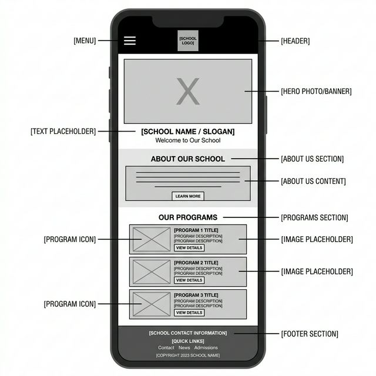
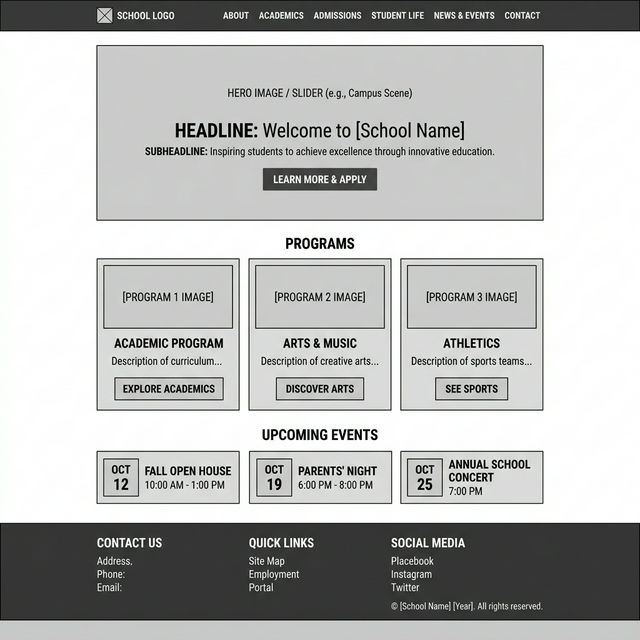

Site Name
Gimnasio Campestre Marcello IAFrancesco
This name accurately identifies the institution and its location-inspired 'Campestre' nature. It is professional and recognizable for the local community in Cajicá.
Site Purpose
The purpose of this website is to serve as a digital gateway for prospective parents to learn about the school's educational philosophy (PEI), admission requirements, and campus facilities. It also serves current families by providing news, event calendars, and school contact information.
Scenarios
Prospective Parent
"How do I enroll my child in first grade for the upcoming academic year?"
The site will provide a clear 'Admissions' section with step-by-step instructions, downloadable forms, and contact details for the admissions office.
Current Parent
"What is the school's pedagogical approach and how does it benefit my child's development?"
The 'Our Project' section will detail the school's focus on nature, values, and academic excellence, explaining the benefits of the 'Campestre' environment. This section also indicates that the institution's teaching method is a variation of the Montessori method, emphasizing student-led discovery within a structured environment.
Color Schema
The Primary color is a muted Golden Yellow, representing energy and growth with a softer feel. The Secondary Navy Blue provides a professional and academic contrast. The Light Yellow accent is used for highlights and subtle backgrounds.
Typography
Heading Font: Playfair Display
Used for all major headings (H1, H2) to provide a classic, academic, and professional feel.
Body Font: Montserrat
Used for paragraph text and smaller headings to ensure modern readability across all devices.
Wireframes
Mobile View

Desktop View
